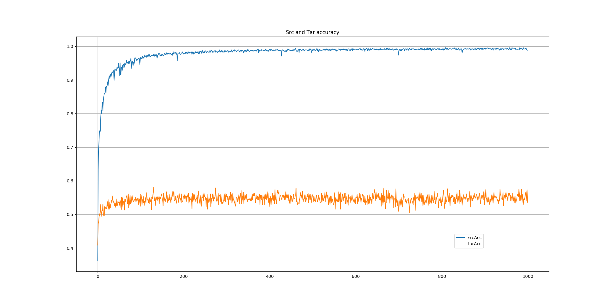

HyperParams

| Param | Value |
| src | amazon |
| tar | webcam |
| manual_seed | 1 |
| batchSize | 64 |
| use_gpu | True |
| num_classes | 31 |
| epochs | 1000 |
| momentum | 0.9 |
| lr | 0.0002 |
| lr_sch | No |
| lr_sch_gamma | 0.1 |
| p_lr_decay | 1000 |
| n0 | 1.0 |
| alpha | 10 |
| beta | 0.75 |
| betas | (0.5, 0.99) |
| net_wtDcy | 1e-05 |
| net_biasDcy | 1e-05 |
| net_wtLR | 1 |
| net_biasLR | 2 |
| btl_wtDcy | 1e-05 |
| btl_biasDcy | 1e-05 |
| btl_wtLR | 10 |
| btl_biasLR | 20 |
| srcDataLen | 2817 |
| tarDataLen | 795 |
Classifier Network
Model(
(classifier): Sequential(
(0): Linear(in_features=4096, out_features=256, bias=True)
(1): ReLU(inplace)
(2): Linear(in_features=256, out_features=31, bias=True)
)
)
Base Network - Alexnet
Sequential(
(0): Conv2d(3, 96, kernel_size=(11, 11), stride=(4, 4))
(1): ReLU(inplace)
(2): LocalResponseNorm(5, alpha=0.0001, beta=0.75, k=1)
(3): MaxPool2d(kernel_size=(3, 3), stride=(2, 2), dilation=(1, 1), ceil_mode=True)
(4): Conv2d(96, 256, kernel_size=(5, 5), stride=(1, 1), padding=(2, 2), groups=2)
(5): ReLU(inplace)
(6): LocalResponseNorm(5, alpha=0.0001, beta=0.75, k=1)
(7): MaxPool2d(kernel_size=(3, 3), stride=(2, 2), dilation=(1, 1), ceil_mode=True)
(8): Conv2d(256, 384, kernel_size=(3, 3), stride=(1, 1), padding=(1, 1))
(9): ReLU(inplace)
(10): Conv2d(384, 384, kernel_size=(3, 3), stride=(1, 1), padding=(1, 1), groups=2)
(11): ReLU(inplace)
(12): Conv2d(384, 256, kernel_size=(3, 3), stride=(1, 1), padding=(1, 1), groups=2)
(13): ReLU(inplace)
(14): MaxPool2d(kernel_size=(3, 3), stride=(2, 2), dilation=(1, 1), ceil_mode=True)
(15): Lambda(
)
(16): Sequential(
(0): Lambda(
)
(1): Linear(in_features=9216, out_features=4096, bias=True)
)
(17): ReLU(inplace)
(18): Dropout(p=0.5)
(19): Sequential(
(0): Lambda(
)
(1): Linear(in_features=4096, out_features=4096, bias=True)
)
(20): ReLU(inplace)
(21): Dropout(p=0.5)
)
Layers frozen
0.weight False
0.bias False
4.weight False
4.bias False
8.weight False
8.bias False
10.weight True
10.bias True
12.weight True
12.bias True
16.1.weight True
16.1.bias True
19.1.weight True
19.1.bias True